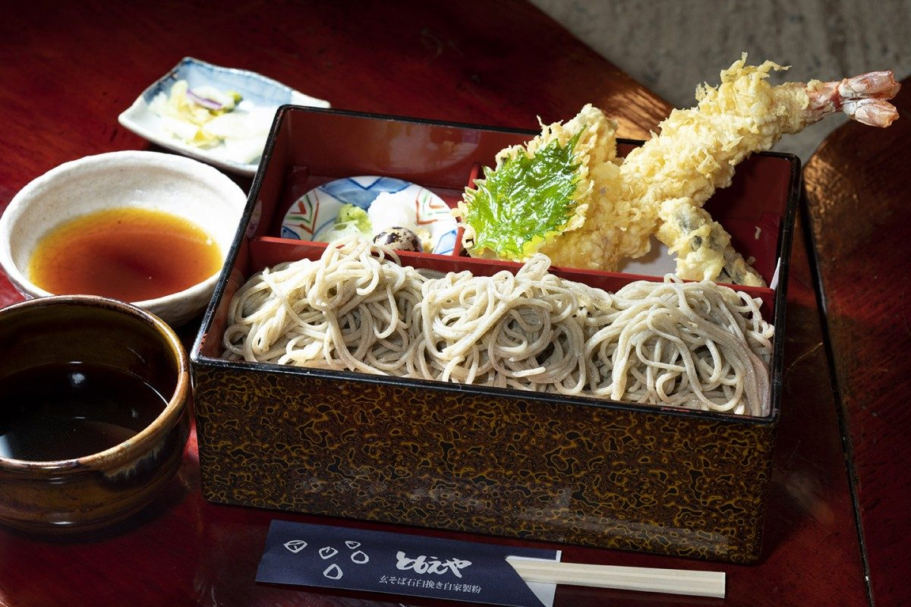
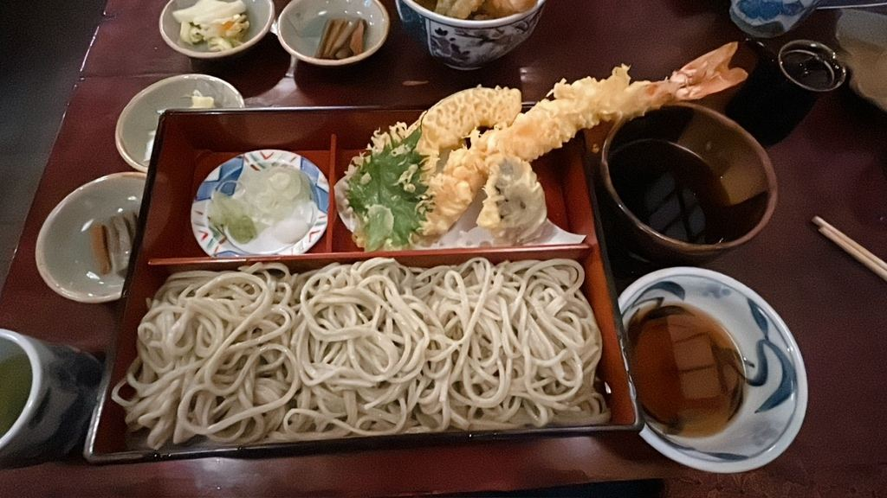
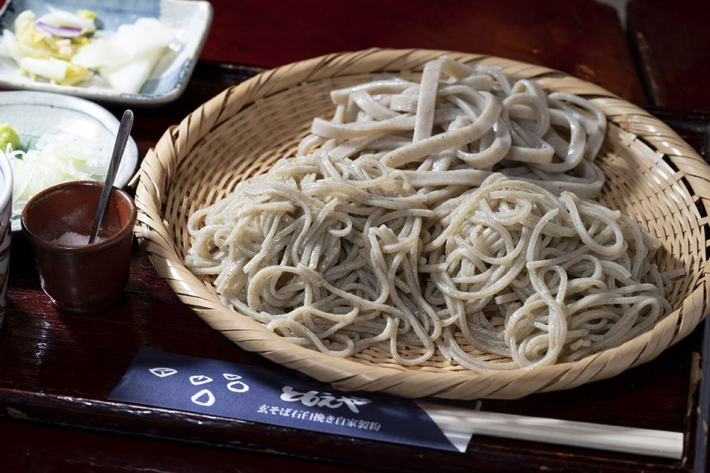
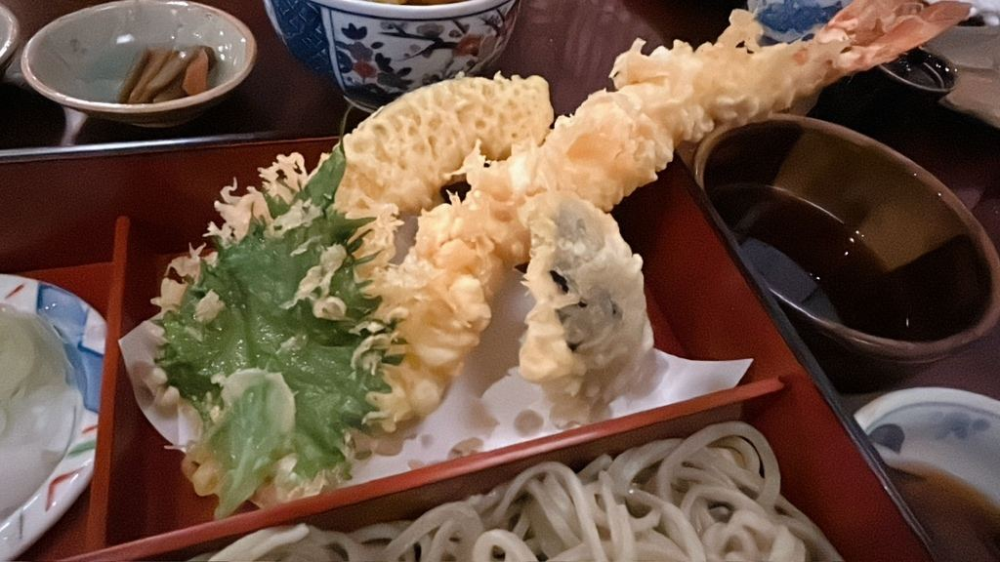
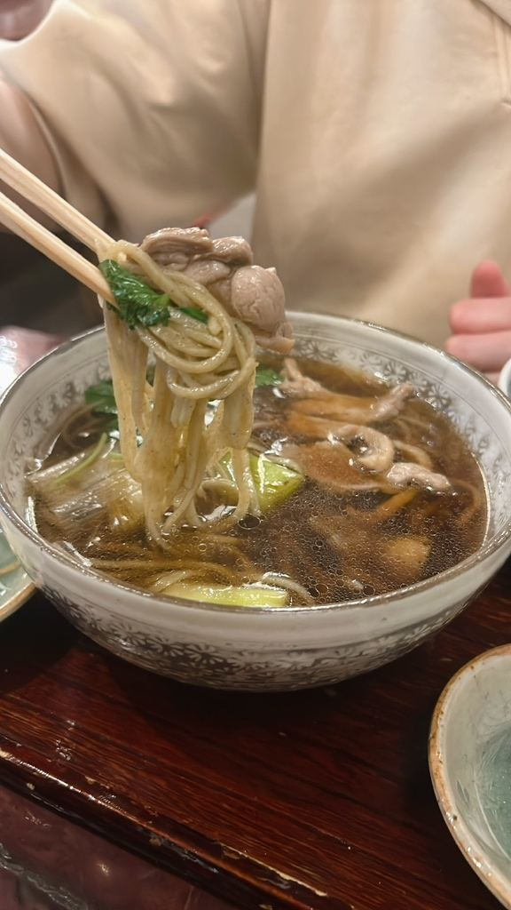
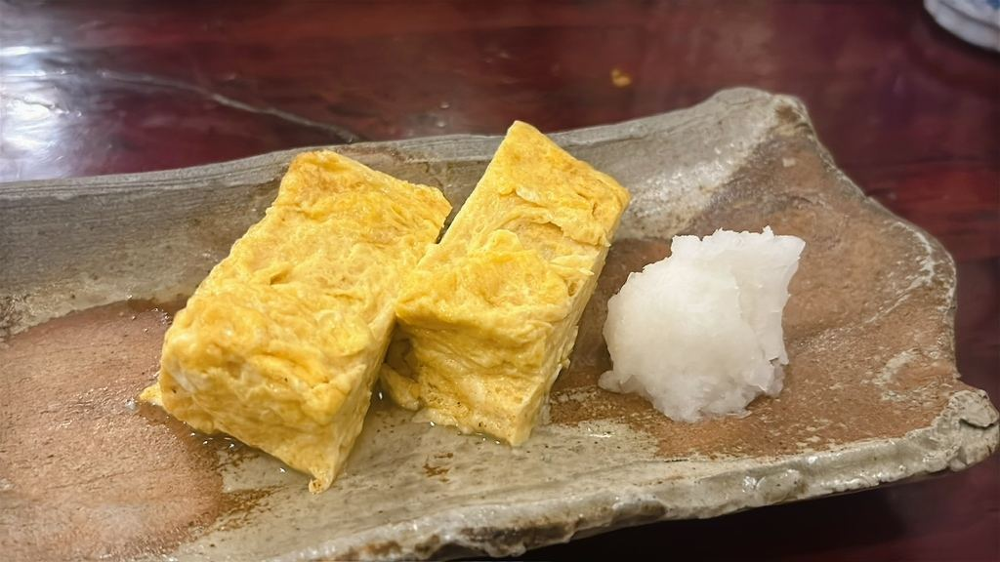
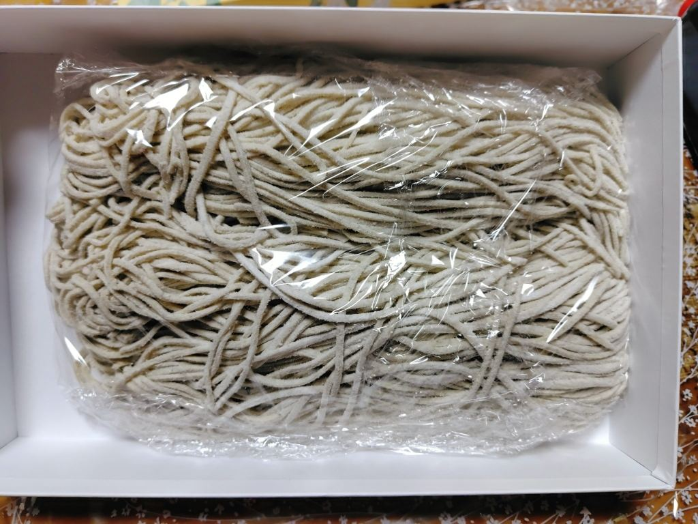
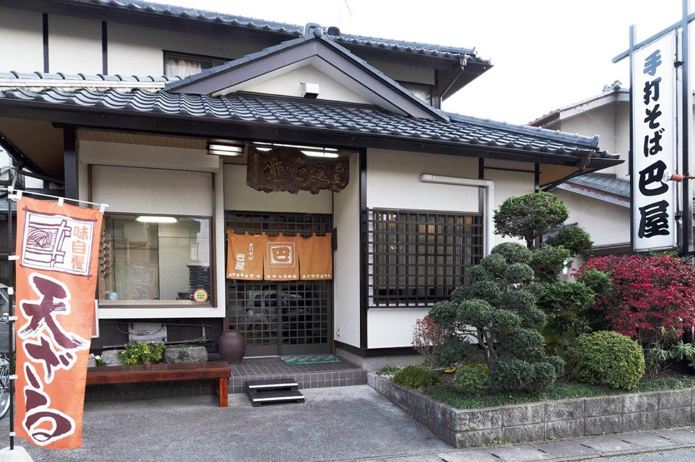

三つの巴に、三種のそば。
十割・二八・熟成太打ち。三つの手打ちそばを一度に食べ比べていただけるのが、当店の「巴せいろ」です。
野木駅から徒歩5分、囲炉裏を囲む席もご用意してお待ちしております。
お急ぎの方・混み具合は0280-57-2637までお電話でおたずねください。

十割・二八・熟成太打ち。三つの巴の紋にちなんで、三種の手打ちそばを一枚でお楽しみいただけるようにしました。


そばと合わせてよくご注文いただくお品です。

大きな海老を1本、香ばしく揚げております。

鴨のだしをきかせたつけ汁で、そばをお召し上がりいただきます。

お酒の一品にも、お子様のお箸にもよく合います。

テーブル席のほか、囲炉裏を囲む席と、小上がりをご用意しております。ご家族でも、大人数でもお使いいただけます。
33席
テーブル・囲炉裏・小上がりをあわせた席数でございます。
6席
囲炉裏を囲む席。炭火の温もりとともにお召し上がりいただけます。
2卓
8人掛けの小上がり。ご家族やご宴会にお使いいただけます。

| 住所 | 〒329-0111 栃木県下都賀郡野木町丸林200-2野木駅から徒歩5分 |
|---|---|
| 電話 | 0280-57-2637 |
| 営業時間 | 11:00〜15:00／17:00〜20:00（L.O. 20:00） |
| 定休日 | 水曜日・第4木曜日 |
| 席数 | 33席（うち囲炉裏6席・小上がり2卓） |
| 駐車場 | 8台 |